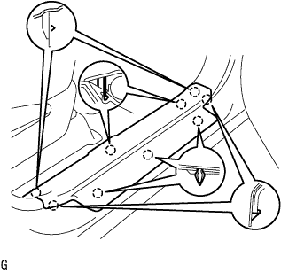

スピーカASSY RR 取り付け |
| 1. スピーカASSY RR取り付け（取り付け位置ＬＨ） |
ボルト3本でスピーカASSY RR LHを取り付ける。
| 2. デッキトリムサイド パネルASSY LH取り付け |
 |
クリップおよびツメをかん合させデツキトリムサイドパネルASSY LHを取り付ける。
| 3. スピーカASSY RR取り付け（取り付け位置ＲＨ） |
ボルト3本でスピーカASSY RR RHを取り付ける。
| 4. デッキトリムサイド パネルASSY RH取り付け |
 |
クリツプおよびツメをかん合させて、デッキトリムサイドパネルASSY RHを取り付ける。
| 5. クォータトリム パネルASSY FR RH取り付け |
| 6. バックドアスカッフ プレート取り付け |
 |
両端上部のツメ位置を合わせ、クリツプをかん合させてバツクドアスカツフプレートを取り付ける。
| 7. バックドア ウエザストリップ取り付け |
| 8. スペアホイール カバーASSY取り付け |
| 9. リヤフロア カーペット取り付け |
| 10. リヤシート3ポイントタイプ ベルトASSY OUT LH取り付け（フロアアンカ部） |
ボルトでリヤシート 3ポイントタイプ ベルトASSY OUT LH（フロアアンカ部）を締め付ける。
| 11. リヤシート 3ポイントタイプ ベルトASSY OUT RH取り付け（フロアアンカ部） |
ボルトでリヤシート 3ポイントタイプ ベルトASSY OUT RH（フロアアンカ部）を締め付ける。
| 12. リヤシートクッションASSY取り付け（リヤシート一体可倒式） |
リヤシートクッションASSY後部のフックをかん合させる。
リヤシートベルトを、リヤシートクッションカバー & パッド後部のゴムバンドに通す。
 |
リヤシートクッションASSY前部のフックをかん合させる。
| 13. リヤシートクッションASSY取り付け（リヤシート分割可倒式） |
リヤシートクッションASSY前側をリヤシート クッション ロック ストライカにロックさせる。
リヤシートベルトを、リヤシートクッションカバー & パッド後部のゴムバンドに通す。
 |
ボルトで、リヤシートヒンジLHを取り付ける。
リヤシートバックヒンジＲＨにスナップリングを取り付ける。
リヤシートヒンジRHを、リヤシートクッションASSY右側ブラケットの角パイプに挿入する。
| 14. リヤシートバックASSY取り付け（リヤシート一体可倒式） |
ボルト2本をでリヤシートバックASSYを取り付ける。
 |
クリップ2個を取り付ける。
| 15. リヤシートバックASSY LH取り付け（リヤシート分割可倒式） |
ボルト2本でリヤシートバックを取り付ける。
 |
クリップ2個を取り付ける。
| 16. リヤシートバックASSY RH取り付け（リヤシート分割可倒式） |
ボルト2本でリヤシートバックを取り付ける。
クリップ2個を取り付ける。
| 17. フロントシート アウタベルトASSY RH取り付け（フロアアンカ部） |
ボルトで、フロントシートアウタベルトASSY RHのフロアアンカ部を取り付ける。
| 18. リヤドア オープニングトリム ウェザストリップ LH取り付け |
ウェザストリップのペイントマーク(黄色および白色、どれか1箇所)とボデー側のウエザストリッツプ取り付け用切り欠き部(矢印部分)を合わせ、リヤドアオープニングトリムウエザストリップLHを取り付ける。

| 19. フロントドア オープニングトリム ウェザストリップ RH取り付け |
 |
ウェザストリップのペイントマーク(白色、どちらか1箇所)を合わせ、フロントドアオープニングトリムウエザストリツプRHを取り付ける。
| 20. デッキサイドトリム カバー FR LH取り付け |
 |
車両後方に押し込みツメをかん合させ、デツキサイドトリムカバーFR LHを取り付ける。
| 21. フロントドアスカッフ プレート LH取り付け |
 |
フロントドアスカッフプレート LH前端部のツメを差し込む。
ツメおよびクリップををかん合させ、フロントドアスカッフプレートLHを取り付ける。
| 22. フロントドアスカッフ プレート RH取り付け |
|  |
スカッフプレート前端部および後端部のツメをかん合させる。
ツメをかん合させ、フロントドアスカッフプレートRHを取り付ける。